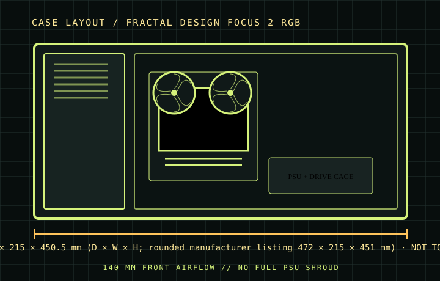

[ CASES // IDENTIFIED CHASSIS ]
Fractal Design Focus 2 RGB
The Focus 2 RGB is a straightforward mesh-front tower with a spacious main chamber and two supplied 140 mm Aspect RGB front fans. Its large GPU allowance sits alongside modest factory storage: two 3.5-inch bays and two 2.5-inch mounts are the included arrangement, while added brackets increase count only when obtained separately.

MODEL SCOPE: Specifications describe the named enclosure generation, not every visually similar case or retail bundle. Published maximums are component-envelope limits; verify the exact SKU, installed fans/radiators, connectors, and manufacturer manual before purchase or assembly.
Dimensions & compatibility
| Cataloged model | Fractal Design Focus 2 RGB |
|---|---|
| Generation / class | 2022 · ATX airflow mid-tower |
| External dimensions | 471.5 × 215 × 450.5 mm (D × W × H; rounded manufacturer listing 472 × 215 × 451 mm) |
| Motherboard fit | ATX, Micro-ATX and Mini-ITX. |
| Drive compatibility | Two 3.5-inch positions and two dedicated 2.5-inch positions; optional mounts can expand 2.5-inch capacity. |
| Graphics card | Up to 405 mm with the standard front fan arrangement. |
| CPU air cooler | Up to 170 mm tower height. |
| Power supply | Up to 250 mm, but shorter units leave more cable routing space. |
| Fans and radiators | RGB version includes 2×140 mm front fans. Front supports up to 3×120/2×140 mm and up to 360/280 mm radiator; roof supports 2×120/140 mm and up to 240 mm radiator (memory-height clearance applies); rear accepts a 120 mm fan/radiator. |
Fit notes for this layout
The Focus 2 has no full PSU shroud and limited cable space behind the motherboard tray. A full-length PSU may fit by specification but leave little room for bundled cables; budget additional routing space or a shorter supply. RGB, solid-panel and regional SKUs differ in included lighting and fans.
- The roof radiator limit is 240 mm and its upper assembly is memory-height sensitive; 280 mm radiators do not fit that position.
- The 405 mm GPU allowance assumes no unusually thick front radiator stack; recalculate card length after front cooling hardware is chosen.
- Only the RGB SKU includes the two preinstalled RGB front fans and controller; identify the exact part suffix before matching accessories.
Source record
- Fractal Design — Focus 2 / Focus 2 RGB product sheetManufacturer dimensions, board and drive support, cooling fit.
- TechPowerUp — Fractal Design Focus 2 RGB reviewIndependent review and specification cross-check.
- GeekaWhat — Fractal Design Focus 2 RGB reviewIndependent build and thermal assessment.
Case specifications are manufacturer-rated maximums unless stated otherwise. Component shape, mounting hardware and assembly order can reduce practical clearance; consult the exact revision manual when dimensions are critical.